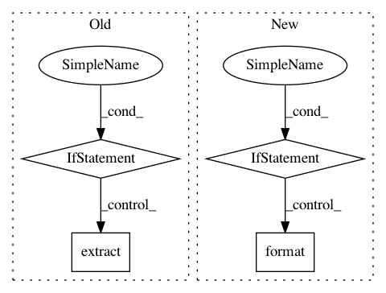

aea2747cda25271b788d670b8e65452b24bed4e0,src/python/pants/backend/android/tasks/unpack_libraries.py,UnpackLibraries,_unpack_artifacts,#UnpackLibraries#Any#,156
Before Change
for archive_path in imports:
for archive in imports[archive_path]:
jar_outdir = self.unpacked_jar_location(archive)
if archive.endswith(".jar"):
jar_file = os.path.join(archive_path, archive)
elif archive.endswith(".aar"):
unpacked_aar_destination = self.unpacked_aar_location(archive)
jar_file = os.path.join(unpacked_aar_destination, "classes.jar")
// Unpack .aar files.
if archive not in self._unpacked_archives:
ZIP.extract(os.path.join(archive_path, archive), unpacked_aar_destination)
self._unpacked_archives.update([archive])
// Create an .aar/classes.jar signature for self._unpacked_archives.
archive = os.path.join(archive, "classes.jar")
else:
raise self.UnexpectedArchiveType("Android dependencies can be .aar or .jar "
"archives (was: {})".format(archive))
// Unpack the jar files.
if archive not in self._unpacked_archives and os.path.isfile(jar_file):
ZIP.extract(jar_file, jar_outdir)
self._unpacked_archives.update([archive])
After Change
// unpack that jar as well.
for coordinate, aar_or_jar in jar_imports:
jar_outdir = self.unpacked_jar_location(coordinate)
if "jar" == coordinate.ext:
jar_file = aar_or_jar
elif "aar" == coordinate.ext:
unpacked_aar_destination = self.unpacked_aar_location(coordinate)
jar_file = os.path.join(unpacked_aar_destination, "classes.jar")
// Unpack .aar files.
if coordinate not in self._unpacked_archives:
ZIP.extract(aar_or_jar, unpacked_aar_destination)
self._unpacked_archives.add(aar_or_jar)
// Create an .aar/classes.jar signature for self._unpacked_archives.
coordinate = M2Coordinate(org=coordinate.org,
name=coordinate.name,
rev=coordinate.rev,
classifier=coordinate.classifier,
ext="classes.jar")
else:
raise self.UnexpectedArchiveType("Android dependencies can be .aar or .jar archives "
"(was: {} at {})".format(coordinate, aar_or_jar))
// Unpack the jar files.
if coordinate not in self._unpacked_archives and os.path.isfile(jar_file):
ZIP.extract(jar_file, jar_outdir)
self._unpacked_archives.add(aar_or_jar)
In pattern: SUPERPATTERN
Frequency: 3
Non-data size: 4
Instances
Project Name: pantsbuild/pants
Commit Name: aea2747cda25271b788d670b8e65452b24bed4e0
Time: 2015-09-17
Author: john.sirois@gmail.com
File Name: src/python/pants/backend/android/tasks/unpack_libraries.py
Class Name: UnpackLibraries
Method Name: _unpack_artifacts
Project Name: dmlc/gluon-cv
Commit Name: 2716ec90b5be79d67cb39c46f1182b9827fa60bc
Time: 2020-05-03
Author: 42975160+HieronymusLex@users.noreply.github.com
File Name: scripts/datasets/market1501.py
Class Name:
Method Name: main
Project Name: pantsbuild/pants
Commit Name: edcd459b9cf96c3e5ffc8d6965df5f2e731b3b84
Time: 2014-10-30
Author: tinystatemachine@gmail.com
File Name: src/python/pants/cache/restful_artifact_cache.py
Class Name: RESTfulArtifactCache
Method Name: use_cached_files